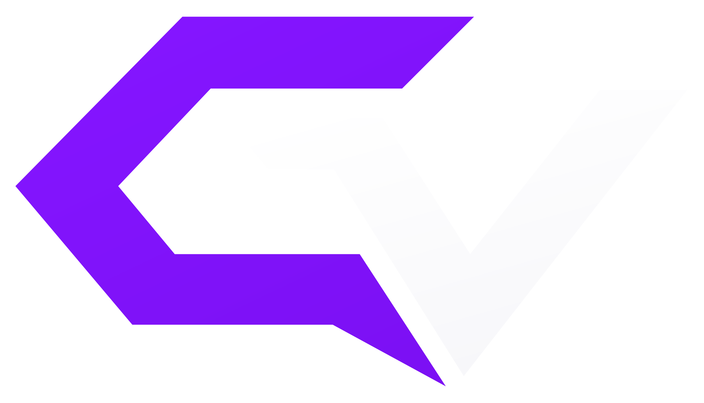
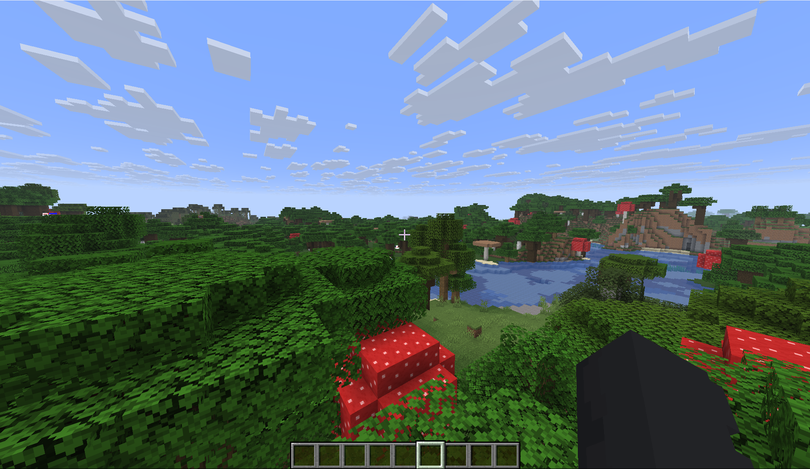

01 / CosmoVisuals
Визуалы CosmoVisuals
На кадре с модом видны частицы в воздухе, изменённое небо и панели HUD. Потяни разделитель, чтобы рассмотреть разницу.

CosmoVisualsНебо, эффекты и HUD в Minecraft
Настрой туман, прицел и анимации. Расставь индикаторы HUD прямо в игре.
Листай, чтобы увидеть эффекты CosmoVisuals в игре и попробовать настройки HUD.
01 / CosmoVisuals
На кадре с модом видны частицы в воздухе, изменённое небо и панели HUD. Потяни разделитель, чтобы рассмотреть разницу.
02 / HUD
Перетаскивай плашки прямо на игровом кадре. Можно также выбрать плашку клавишей Tab и передвинуть её стрелками.
03 / Меню CosmoVisuals
Выбери категорию или найди модуль по названию. Нажимай на переключатели рядом с модулями, чтобы включать и выключать их в демо.



Пролистай галерею. Нажми на кадр, чтобы открыть его крупнее.


В Cosmetics можно надевать шапки, нимбы и крылья. Выбери один из четырёх аксессуаров и поверни модель, чтобы рассмотреть её.
Нимб31 визуальный модуль, 15 позиций в категории HUD и 19 утилит. Названия взяты из игрового меню. Координаты, FPS и пинг перечислены отдельно, как в игре.
CosmoVisuals ставится на клиент Minecraft.
mods, затем запусти профиль Fabric.Да, мод бесплатный и не требует подписки.
Подготовь Minecraft 1.21.11, Java 21+, Fabric Loader 0.19.5+ и Fabric API. Помести оба JAR-файла в папку mods и запусти профиль Fabric. Пошаговая установка.
Открой окно скачивания и выбери свою ОС. Если профиль Fabric использует отдельную папку игры, открой её и создай внутри папку mods.
В CosmoVisuals можно менять небо и туман, прицел, эффекты и расположение панелей HUD. Список функций мода.
Анонсы публикуем в Telegram, вопросы обсуждаем в Discord. Ссылки на оба сообщества есть в шапке и внизу страницы.
Проверь правила сервера перед подключением. На разных серверах могут ограничивать подсветку цели и утилиты для боя.